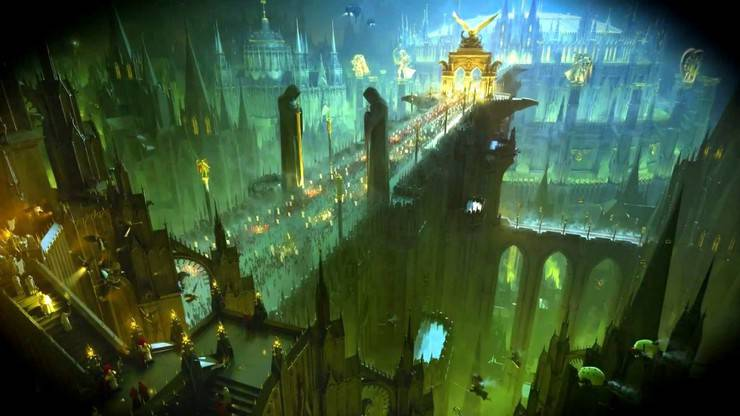
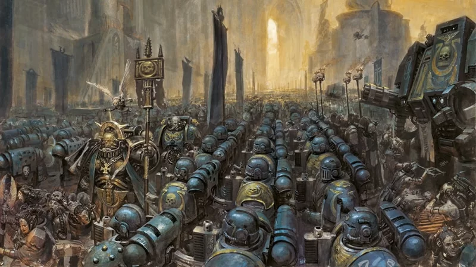
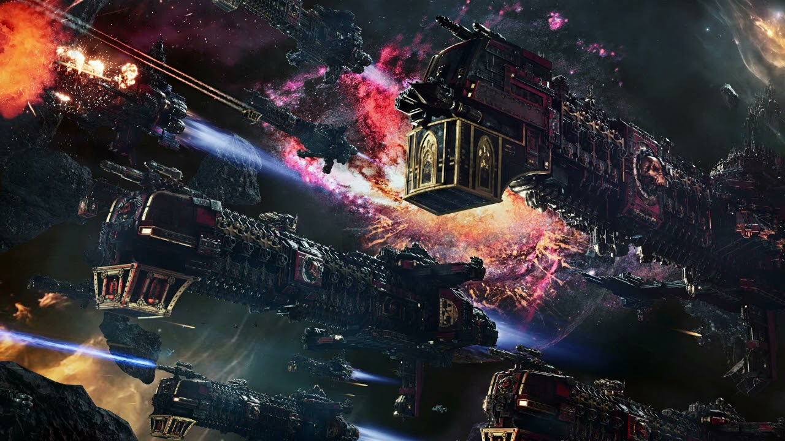
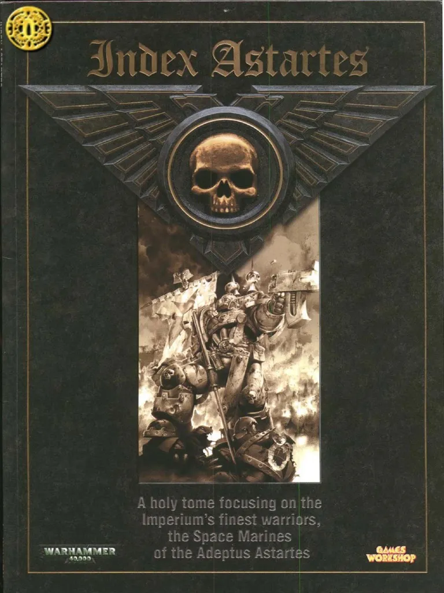
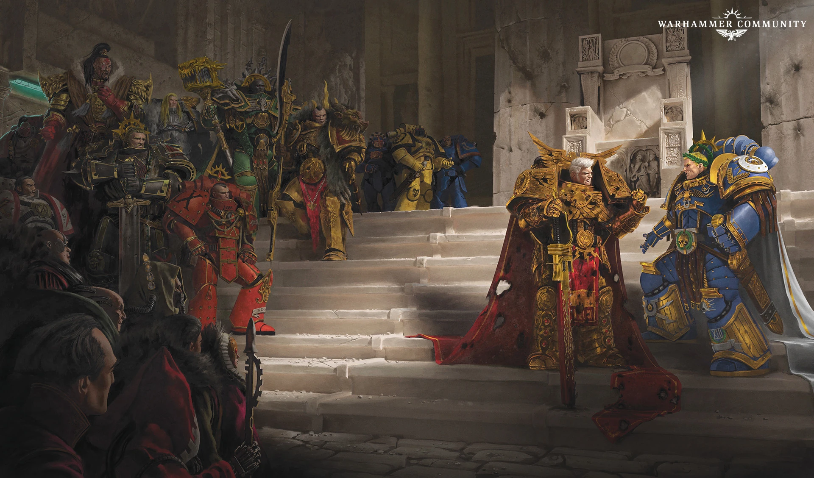
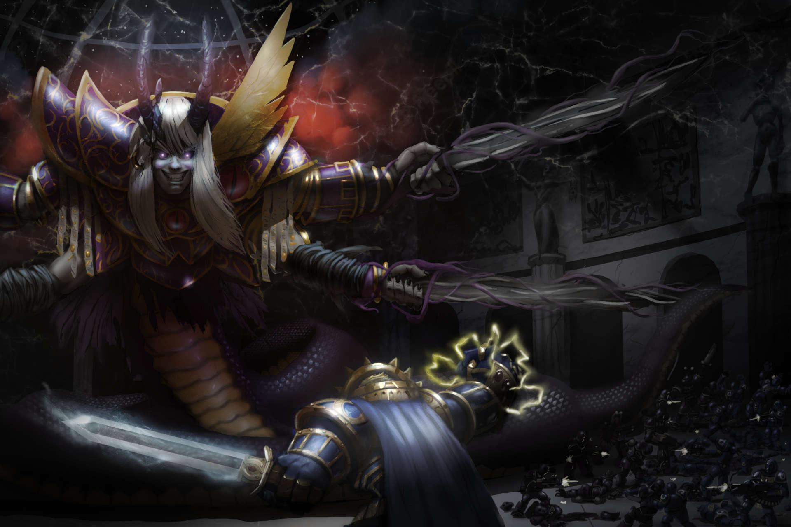
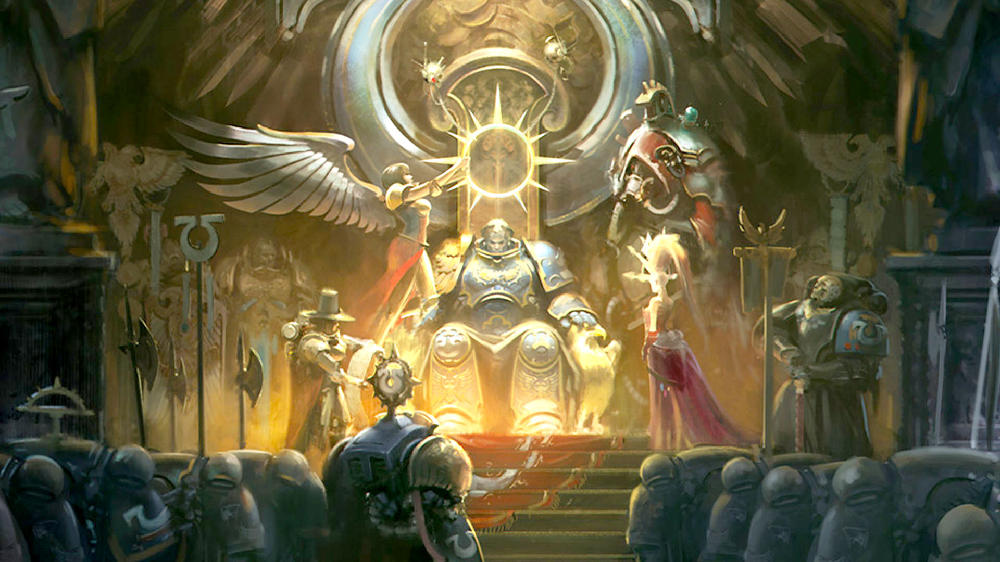
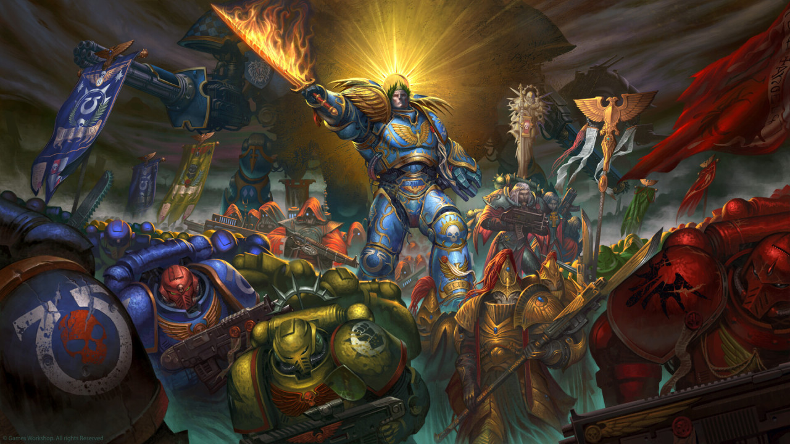

Roboute Guilliman
Primarch of the Ultramarines, Master of Ultramar, author of the Codex Astartes, and Lord Commander of the Imperium.
A son found already a ruler
He was discovered as an infant by Konor, Tribune of Macragge, and raised inside the ruling household. Unlike most of his nineteen brothers, who were cast onto feral or broken worlds, Guilliman grew up inside a civilization already capable of shaping him back. By his teenage years he was rewriting the planet's military doctrine; by adulthood he had unified Macragge's rival city-states through negotiation backed by decisive force, rather than a drawn-out war of conquest.
When the Emperor's Great Crusade fleet reached Macragge, it found not a primitive world to bring to heel but a functioning, disciplined empire already built in the primarch's image.

The largest legion, built on doctrine rather than instinct

Unification of Macragge
Guilliman ends generations of inter-city war through negotiation backed by force, then turns the new order outward to neighbouring systems.
Formation of Ultramar
Conquered and allied systems are bound into a single realm, the Five Hundred Worlds, governed with the same rigour Guilliman later brings to the Imperium entire.
Doctrine of combined arms
The Legion becomes known for disciplined, textbook warfare, with tactical squads, fire support and armour working in concert rather than any single overwhelming tactic.
A Warmaster's quiet resentment
Horus, raised above his brothers as Warmaster, privately resents Guilliman's administrative brilliance and battlefield discipline, a friction later histories tie to his fall.
Courage and honour. Not for the Emperor's sake, nor for the sake of the Imperium, but because it is right.
Attributed to Roboute GuillimanThe Word Bearers, ostensibly allies, sprang an ambush at Calth: void war crippled the system's star, unleashing radiation storms across the planet below and trapping tens of thousands of Ultramarines in a war fought largely underground for years afterward. Guilliman survived and emerged from it named the Avenging Son: the loyalist primarch who spent the rest of the Heresy holding the eastern Imperium together while Horus drove on Terra.

A structural answer to a structural risk
After the Heresy, Guilliman diagnosed the Legions themselves as the vulnerability: a single traitor primarch could turn a hundred thousand loyal warriors overnight. The Codex reorganised the Imperium's entire military doctrine.
Chapters, not legions
Loyalist Legions were broken into Chapters of roughly one thousand Space Marines, so no single commander could ever again hold the strength of an entire legion.
Standard organisation
Ten companies and standardised squad roles (tactical, devastator and assault), so any two Chapters could fight as one force without friction.
A doctrine, not a cage
Guilliman wrote it as a framework for victory rather than a rulebook to be followed blindly. It is a distinction his own Ultramarines take pride in honouring to the letter.

Ten thousand years between two wars

Lord Commander of the Imperium
With the Emperor incapacitated on the Golden Throne, Guilliman leads the Great Scouring, hunting the shattered traitor forces and stabilising a wounded Imperium.
Wounded by a daemon primarch
Struck by a poisoned blade in battle against the Chaos-corrupted Fulgrim, Guilliman falls. He is kept from true death only by suspended animation, his body held in stasis for ten thousand years.


Revival on Macragge
Archmagos Belisarius Cawl succeeds in reviving the primarch, waking him into an Imperium unrecognisable from the one he left.
The Indomitus Crusade
Guilliman leads a vast crusade of newly created Primaris Space Marines to reinforce the Imperium's shattered defences, and is named Imperial Regent, ruling in the Emperor's name.
